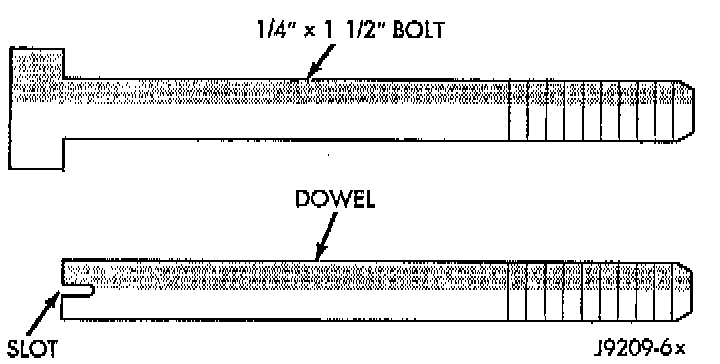
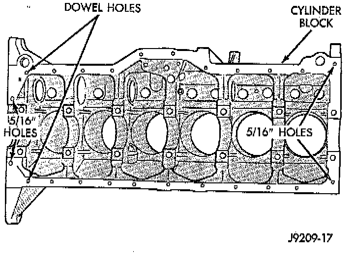
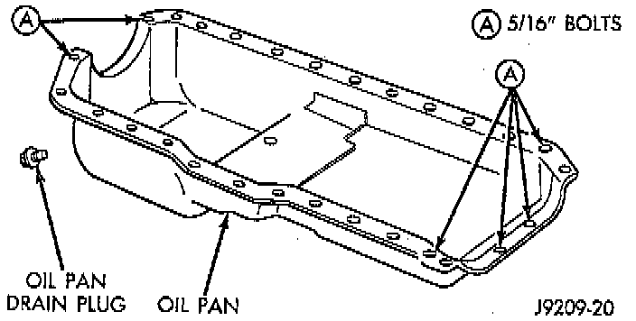

Oil Pan: Service and Repair
REMOVAL1. Disconnect negative cable from battery.
2. Raise the vehicle.
3. Remove the oil pan drain plug and drain the engine oil.
4. Disconnect the exhaust pipe at the exhaust manifold.
5. Disconnect the exhaust hanger at the catalytic converter and lower the pipe.
6. Remove the starter motor.
7. Remove the engine flywheel and transmission torque converter housing access cover.
8. If equipped with an oil level sensor, disconnect the sensor.
9. Position a jack stand directly under the engine vibration damper.
10. Place a piece of wood (2 x 2) between the jack stand and the engine vibration damper.
11. Remove the engine mount through bolts.
12. Using the jack stand, raise the engine until adequate clearance is obtained to remove the oil pan.
13. Remove the oil pan bolts. Carefully slide the oil pan and gasket to the rear. If equipped with an oil level sensor, take care not to damage the sensor.
INSTALLATION
1. Clean the block and pan gasket surfaces.

2. Fabricate 4 alignment dowels from 1 1/2 x 1/4 inch bolts. Cut the head off the bolts and cut a slot into the top of the dowel. This will allow easier installation and removal with a screwdriver.

3. Install two dowels in the timing case cover. Install the other two dowels in the cylinder block.
4. Slide the one-piece gasket over the dowels and onto the block and timing case cover.
5. Position the oil pan over the dowels and onto the gasket. If equipped with an oil level sensor, take care not to damage the sensor.

6. Install the 1/4 inch oil pan bolts. Tighten these bolts to 9.5 Nm (84 inch lbs.) torque. Install the 5/16 inch oil pan bolts. Tighten these bolts to 15 Nm (132 inch lbs.) torque.
7. Remove the dowels. Install the remaining 1/4 inch oil pan bolts. Tighten these bolts to 9.5 Nm (84 inch lbs.) torque.
8. Lower the engine until it is properly located on the engine mounts.
9. Install the through bolts and tighten the nuts.
10. Lower the jack stand and remove the piece of wood.
11. Install the engine flywheel and transmission torque converter housing access cover.
12. Install the engine starter motor.
13. Connect the exhaust pipe to the hanger and to the engine exhaust manifold.
14. Install the oil pan drain plug. Tighten the plug to 34 Nm (25 ft. lbs.) torque.
15. Lower the vehicle.
16. Connect negative cable to battery.
17. Fill the oil pan with engine oil to the specified level.
WARNING: USE EXTREME CAUTION WHEN THE ENGINE IS OPERATING. DO NOT STAND IN A DIRECT LINE WITH THE FAN. DO NOT PUT YOUR HANDS NEAR THE PULLEYS, BELTS OR FAN. DO NOT WEAR LOOSE CLOTHING.
18. Start the engine and inspect for leaks.